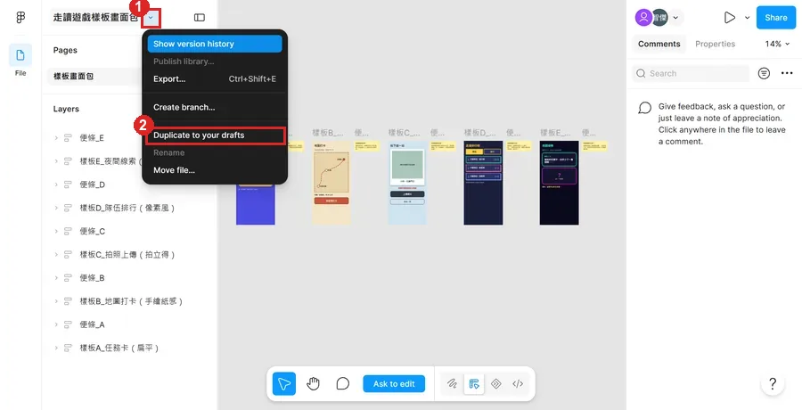
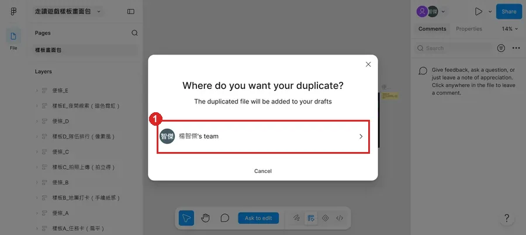

所有週次 · 文化遊戲松實作 · W11 · Figma 1/3
把你的遊戲構想，排成一頁 Figma 提案
最後更新：2026-11-17 21:00
這週做一份 Figma 單頁企劃提案：挑一個樣板當底，拼 2–3 塊別的模組，做出 3 個遊戲畫面，排成一頁。這週做出 3 個遊戲畫面、把構想呈現出來就很厲害了，不用求多；互動下週在 Google AI Studio 再做。
問卷課程自我檢核問卷（約 4 分鐘）
約 3–4 分鐘，只有今天這一次。
完成後，把「已完成課程自我檢核問卷」那張卡截圖，交到 flipclass 的 W11-1（佔 3%）。
認識十二種樣板，挑一個當底
課堂先做玩兩版，想四件事
每個樣板有兩個版本：換皮版只換了畫面和名字，玩法版把文化放進規則裡。各玩一輪（約 18 分鐘），邊玩邊想：
- 回到剛才：哪一刻你猶豫最久，或最想再玩一次？當時你在選什麼？
- 換一樣東西：把廟換成便利商店、把擲筊換成丟硬幣，剛剛那一步還會一樣嗎？哪一版會變？
- 找規則：會變的那個地方，就是文化在遊戲裡做事的地方。它是哪一條規則？
- 回到你的設計：你的畫面裡，哪個東西換掉之後，玩家的決定會跟著變？
概覽這份作業一頁看完
| 要交什麼 | 一份 Figma 單頁企劃提案的連結（Anyone can view），加一張助教「結果卡」截圖。 |
| 多久 | 課堂約 115 分鐘，今天做完。11/18（三）09:10 開放，11/25（三）09:10 截止。 |
| 下週 | AI Studio 1/3：把你的畫面做成能玩的互動版。 |
步驟六步做完這一份
每一步一句做什麼、一句做到什麼程度算好；細節收在「小抄」裡。
1玩樣板約 30 分鐘
先玩上面的兩版，再把其他樣板各看一眼（每張卡有「▶ 試玩」）。
好了：你心裡有一個最想拿來當底的樣板。
2挑一個樣板，複製到自己的 Figma約 15 分鐘
用那張卡的「🎨 Figma 稿」打開，用學校信箱登入 Figma，按檔名旁的 ▾ →「Duplicate to your drafts」。打不開或不能複製，就舉手。
好了：檔名後面有「(Copy)」，你在自己的副本裡。
小抄：登入與複製




不小心點到「Move to trash」：到 Figma 首頁左邊的 Trash 還原。
3從「模組區」複製 2–3 塊，拼進你的畫面約 20 分鐘
在同一個 Figma 檔的「模組區」頁，複製你要的那幾塊（Ctrl＋C），貼到「畫面」頁（Ctrl＋V）。拼 2–3 塊就好。每拼一塊想：換上它，哪裡變好玩了？
好了：你的畫面上有 2–3 塊別的樣板的東西。
小抄：Figma 操作
改文字：雙擊兩下才進入編輯，Ctrl＋A 全選，輸入新字，Esc 離開；改錯按 Ctrl＋Z。改顏色：點方框，右邊 Fill 點色塊。加按鈕：按 R 拉方框，再按 T 打字。


4排成一頁提案約 30 分鐘
做出 3 個遊戲畫面，排到「一頁企劃」頁，版面自由，先有畫面和一個好玩的點子。
好了：別人只看這一頁，就看得懂在玩什麼。
小抄：好的一頁提案
- 一頁看得完。
- 主畫面最大。
- 用圖說話，少用字。
參考：Stone Librande 的單頁企劃做法。
5找助教聊，把提案說清楚約 15 分鐘
打開右下角「問AI助教」，從「你的畫面裡最好玩的那一刻是什麼？」聊起，聊完按「對，就這樣」。
好了：你拿到一張「結果卡」。
6分享連結，交件約 5 分鐘
按右上角 Share，把 Anyone 設成「can view」，複製連結，用無痕視窗打得開才算。到 flipclass 貼上連結，再附結果卡截圖。
好了：連結打得開。打不開視同未繳交。
小抄：分享

助教討論和助教聊聊你的提案
討論佔這次成績的 30%。助教在右下角「問AI助教」，只問問題、不給答案；評分看你想得多深，不是講了幾次。至少回答 3 輪。對話會存下來，老師會讀；分數第 16 週才公布。
出處標示欄存版本時填三格
存版本時填三格，很短就好；跟助教聊完會自動幫你填好，看過再存。
先在上面綁定你的編號，這裡才會出現填寫區。
檢核交之前，對照三點
- 1交了單頁提案連結。Anyone 是 can view。
- 2連結打得開。用無痕視窗貼上試一次。
- 3交了助教結果卡截圖。只交這一張，內容好不好由助教討論那 30% 看。
卡住了常見的卡住與解法
- 找不到複製的選項
- 先登入 Figma；沒登入只能看。找意思是「複製」的那個，找不到就問老師。
- 文字改不了
- 連按兩三下，直到出現閃爍的游標。
- Share 裡看不到 Anyone
- 把存取改成「Anyone」，右邊選「can view」。
- 不知道挑哪一個樣板
- 挑你最想拿來改的。想不出來就挑卡牌或解謎，畫面最單純。
- 在手機上
- Figma 手機網頁只能看，不能複製、改字。這些步驟用教室電腦或同組同學的電腦。
最後一題這個單元你花了多少腦力？
做完這個單元，你覺得自己花了多少腦力？ 1（非常少）……9（非常多）
想多拿分：讀一份小封神參考（自願，加分，不扣分）
教材區有一份「小封神參考資料」。挑一段放進你的遊戲，寫明原著哪裡、你改了什麼，這份作業最多再加 5%。沒讀完全不扣分。
帶筆電的進階任務（自願，加分，不扣分）
沒帶筆電、或只用手機和教室電腦的同學，可以直接略過這一塊，上面的主線一樣能完成。每週的進階任務只有一件，做不做都不影響你的主線作業。
這週的任務：把樣板放到自己的電腦上，改一個字，看它馬上變。
為什麼值得多做：在自己的電腦上改，存檔、重新整理，一兩秒就看到結果，不用等任何線上工具。後面幾週你會一直需要這樣「改一點、馬上看」。教室電腦重開機會清空，所以這件事要用自己的電腦。
- 下載樣板資料夾。老師會給你所選樣板的下載連結，下載後解壓縮到桌面。
- 雙擊 HTML 檔。它會用瀏覽器打開，不用上網也能玩。先玩一下。
- 用記事本打開同一個資料夾裡的 JSON 檔。找到一個人物或地點的名字，改成你想要的字。注意不要刪掉前後的引號與逗號。
- 存檔，回到瀏覽器按重新整理。看到你改的字就成功了。
卡住了：頁面出現紅字或打不開，通常是改到了引號或逗號。按 Ctrl＋Z 還原，再改一次；還是不行，把樣板資料夾重新解壓縮一份，從頭來。
下週的進階任務：把 AI Studio 做好的版本存回你的電腦。